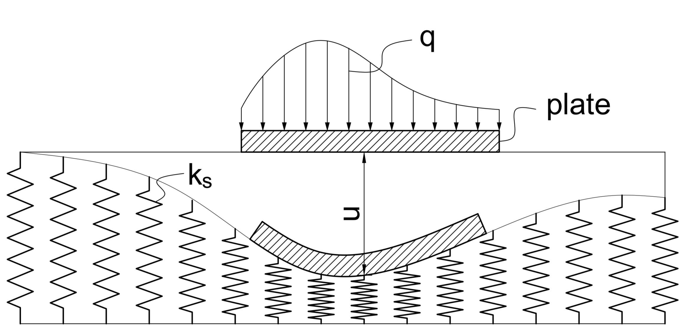
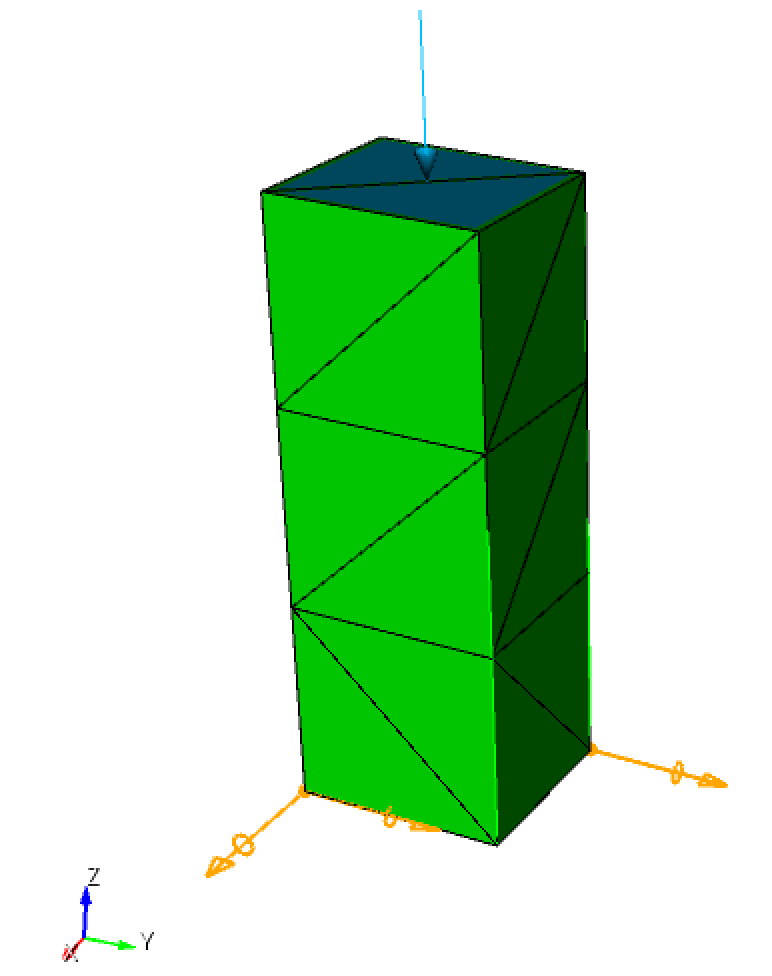
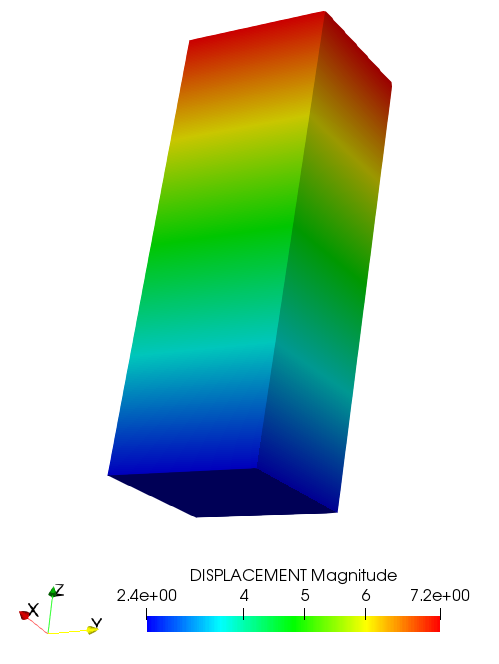
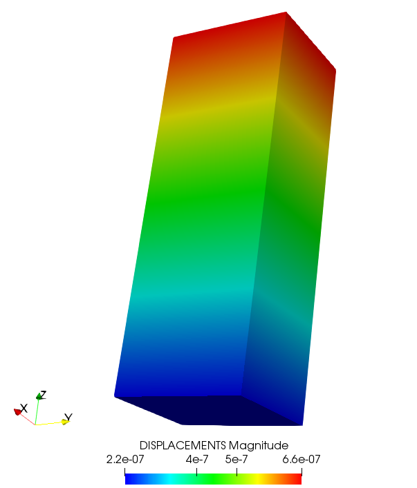
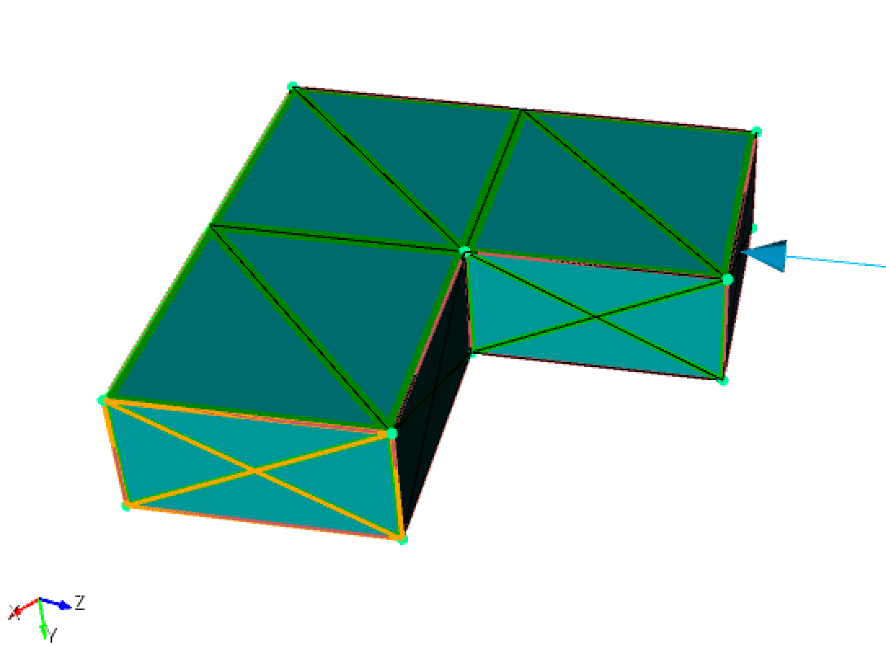
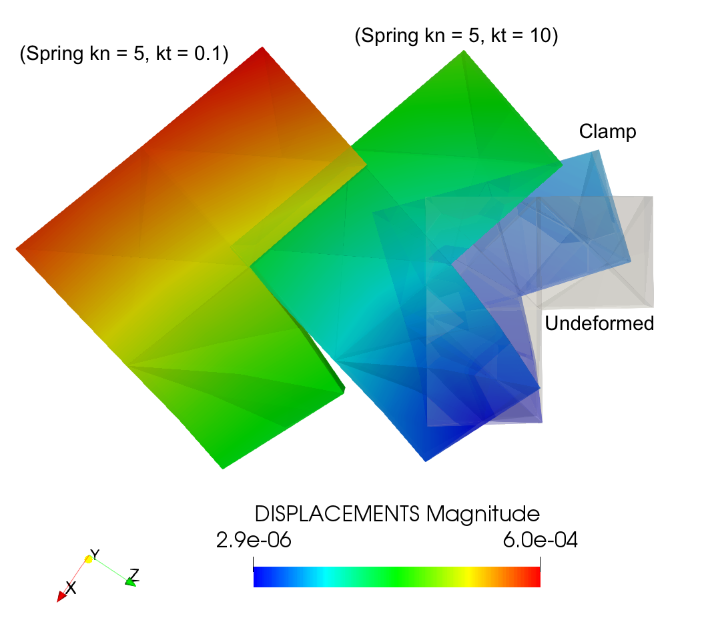

Introduction
This tutorial presents the implementation of spring elements in MoFEM. The spring elements are used to model the interaction between the structure being considered and other structures in surrounding environment. In contrast to other type of boundary conditions where the displacements/rotations at the surface of contact are fixed, the spring boundary condition allows the surface to move during the analysis which in turn creates reaction forces acting on the structure at the boundary surface. The magnitude of this force is changed propotionally to the spring stiffness and the extension or contraction in its length. Figure 1 illustrates a plate bearing load \( q \) sits on elastic foundation which is modelled by springs with stiffness \( k_s \).

Figure 1: Plate on elastic foundation modelled by springs
The remaining of this tutorial is organised as follows. The next section describes the finite element formulation of the spring element where its contributions to the right-hand side (RHS) and the left-hand side (LHS) are presented. It is followed by the description of the implementation of spring element in the platform of MoFEM. The following section closes this tutorial by showing sample implementations of spring elements to the elasticity and nonlinear elasticity modules.
Formulation
The finite element formulation of the spring element contributing to RHS and LHS can be respectively derived as follows
\[
\begin{align}
f_s &= \int\limits_{\Gamma }^{} {{\psi ^T}{F^s}\left( u
\right)d\Gamma } = \int\limits_{\Gamma }^{} {{\psi
^T}{k_s} u d \Gamma }, \\
{K^s} &= \int\limits_\Gamma ^{} {{\psi ^T}{k_s}\psi d\Gamma }.
\end{align}
\]
where \( \Gamma \) is the domain occupied by the surface with springs, \(
\psi \) is approximation function, \( k_s \) denotes spring stiffness, and \( u \) is the extension/contraction of the spring which can be calculated by the displacement of the point on the surface where spring is applied. Physically, \( k_s \) can be considered as spring density on the surface.
Implementation
In the platform of MoFEM, the implementation of user data operators (UDO) for spring boundary conditions can be found in SpringElement.cpp and SpringElement.hpp. Particularly, the operators OpSpringFs and OpSpringKs are developed to calculate the contribution of springs to the RHS and LHS of the system of equations, respectively.
Operator OpSpringFs for the RHS
- The operator OpSpringFs is a class that inherits from another class of MoFEM::FaceElementForcesAndSourcesCore::UserDataOperator. It is worth noting that, in the current implementation, springs are applied on face elements only.
};
default operator for TRI element
- Public members include (1) nF is a sub-vector that stores force at each degree of freedom, (2) commonDataPtr pointing to spring data associated with Gauss points, (3) dAta contains block data, and (4) is_spatial_position being a flag to check the field name, e.g. SPATIAL_POSITION or DISPLACEMENT, which later be used to determine the displacements at Gauss points.
VectorDouble nF;
boost::shared_ptr<DataAtIntegrationPtsSprings> commonDataPtr;
BlockOptionDataSprings &dAta;
bool is_spatial_position = true;
- Then, the OpSpringFs constructor is implemented
OpSpringFs(boost::shared_ptr<DataAtIntegrationPtsSprings> &common_data_ptr,
BlockOptionDataSprings &data,
const std::string
field_name)
commonDataPtr(common_data_ptr), dAta(data) {
if (
field_name.compare(0, 16,
"SPATIAL_POSITION") != 0)
is_spatial_position = false;
}
implementation of Data Operators for Forces and Sources
constexpr auto field_name
- Finally, the OpSpringFs::doWork method of the OpSpringFs operator is implemented as follows
MoFEMErrorCode doWork(int side, EntityType type,
EntitiesFieldData::EntData &data) {
const int nb_dofs = data.getIndices().size();
if (nb_dofs == 0)
if (dAta.tRis.find(getNumeredEntFiniteElementPtr()->getEnt()) ==
dAta.tRis.end()) {
}
CHKERR commonDataPtr->getBlockData(dAta);
nF.resize(nb_dofs, false);
nF.clear();
const int nb_gauss_pts = data.getN().size1();
auto t_w = getFTensor0IntegrationWeight();
commonDataPtr->springStiffnessNormal, 0., 0., 0.,
commonDataPtr->springStiffnessTangent, 0., 0., 0.,
commonDataPtr->springStiffnessTangent);
auto t_normal_ptr = getFTensor1Normal();
t_normal(
i) = t_normal_ptr(
i);
auto t_tangent1_ptr = getFTensor1Tangent1AtGaussPts();
t_tangent1(
i) = t_tangent1_ptr(
i);
t_spring_global = MetaSpringBC::transformLocalToGlobal(
t_normal, t_tangent1, t_tangent2, t_spring_local);
auto t_solution_at_gauss_point =
getFTensor1FromMat<3>(*commonDataPtr->xAtPts);
auto t_init_solution_at_gauss_point =
getFTensor1FromMat<3>(*commonDataPtr->xInitAtPts);
for (int gg = 0; gg != nb_gauss_pts; ++gg) {
if (is_spatial_position) {
t_displacement_at_gauss_point(
i) =
t_solution_at_gauss_point(
i) - t_init_solution_at_gauss_point(
i);
} else {
t_displacement_at_gauss_point(
i) = t_solution_at_gauss_point(
i);
}
double w = t_w * getArea();
auto t_base_func = data.getFTensor0N(gg, 0);
&nF[2]);
for (int rr = 0; rr != nb_dofs / 3; ++rr) {
t_nf(
i) +=
w * t_base_func * t_spring_global(
i,
j) *
t_displacement_at_gauss_point(
j);
++t_base_func;
++t_nf;
}
++t_w;
++t_solution_at_gauss_point;
++t_init_solution_at_gauss_point;
}
Vec f = getFEMethod()->ksp_f != PETSC_NULLPTR ? getFEMethod()->ksp_f
: getFEMethod()->snes_f;
}
#define MoFEMFunctionReturnHot(a)
Last executable line of each PETSc function used for error handling. Replaces return()
#define MoFEMFunctionBegin
First executable line of each MoFEM function, used for error handling. Final line of MoFEM functions ...
#define MoFEMFunctionReturn(a)
Last executable line of each PETSc function used for error handling. Replaces return()
#define CHKERR
Inline error check.
FTensor::Index< 'i', SPACE_DIM > i
FTensor::Index< 'j', 3 > j
FTensor::Index< 'k', 3 > k
const FTensor::Tensor2< T, Dim, Dim > Vec
constexpr std::enable_if<(Dim0<=2 &&Dim1<=2), Tensor2_Expr< Levi_Civita< T >, T, Dim0, Dim1, i, j > >::type levi_civita(const Index< i, Dim0 > &, const Index< j, Dim1 > &)
levi_civita functions to make for easy adhoc use
MoFEMErrorCode VecSetValues(Vec V, const EntitiesFieldData::EntData &data, const double *ptr, InsertMode iora)
Assemble PETSc vector.
Operator OpSpringKs for the LHS
Similarly to the previous part, the operator OpSpringKs which calculates the contribution of the spring elements to the LHS is implemented as follows
boost::shared_ptr<DataAtIntegrationPtsSprings> commonDataPtr;
BlockOptionDataSprings &dAta;
MatrixDouble locKs;
MatrixDouble transLocKs;
OpSpringKs(boost::shared_ptr<DataAtIntegrationPtsSprings> &common_data_ptr,
BlockOptionDataSprings &data,
const std::string
field_name)
commonDataPtr(common_data_ptr), dAta(data) {}
MoFEMErrorCode
doWork(
int row_side,
int col_side, EntityType row_type,
EntityType col_type,
EntitiesFieldData::EntData &row_data,
EntitiesFieldData::EntData &col_data) {
const int row_nb_dofs = row_data.getIndices().size();
if (!row_nb_dofs)
const int col_nb_dofs = col_data.getIndices().size();
if (!col_nb_dofs)
if (dAta.tRis.find(getNumeredEntFiniteElementPtr()->getEnt()) ==
dAta.tRis.end()) {
}
CHKERR commonDataPtr->getBlockData(dAta);
locKs.resize(row_nb_dofs, col_nb_dofs, false);
locKs.clear();
const int row_nb_gauss_pts = row_data.getN().size1();
if (!row_nb_gauss_pts)
const int row_nb_base_functions = row_data.getN().size2();
auto get_tensor2 = [](MatrixDouble &
m,
const int r,
const int c) {
&
m(3 * r + 0, 3 *
c + 0), &
m(3 * r + 0, 3 *
c + 1),
&
m(3 * r + 0, 3 *
c + 2), &
m(3 * r + 1, 3 *
c + 0),
&
m(3 * r + 1, 3 *
c + 1), &
m(3 * r + 1, 3 *
c + 2),
&
m(3 * r + 2, 3 *
c + 0), &
m(3 * r + 2, 3 *
c + 1),
&
m(3 * r + 2, 3 *
c + 2));
};
commonDataPtr->springStiffnessNormal, 0., 0., 0.,
commonDataPtr->springStiffnessTangent, 0., 0., 0.,
commonDataPtr->springStiffnessTangent);
t_normal(
i) = t_normal_ptr(
i);
t_tangent1(
i) = t_tangent1_ptr(
i);
t_spring_global = MetaSpringBC::transformLocalToGlobal(
t_normal, t_tangent1, t_tangent2, t_spring_local);
for (int gg = 0; gg != row_nb_gauss_pts; gg++) {
auto t_row_base_func = row_data.getFTensor0N(gg, 0);
for (int rr = 0; rr != row_nb_dofs / 3; rr++) {
auto t_col_base_func = col_data.getFTensor0N(gg, 0);
for (int cc = 0; cc != col_nb_dofs / 3; cc++) {
auto assemble_m = get_tensor2(locKs, rr, cc);
w * t_row_base_func * t_col_base_func * t_spring_global(
i,
j);
++t_col_base_func;
}
++t_row_base_func;
}
++t_w;
}
col_nb_dofs, &*col_data.getIndices().begin(),
&locKs(0, 0), ADD_VALUES);
if (row_side != col_side || row_type != col_type) {
transLocKs.resize(col_nb_dofs, row_nb_dofs, false);
noalias(transLocKs) = trans(locKs);
row_nb_dofs, &*row_data.getIndices().begin(),
&transLocKs(0, 0), ADD_VALUES);
}
}
};
const double c
speed of light (cm/ns)
MoFEMErrorCode MatSetValues(Mat M, const EntitiesFieldData::EntData &row_data, const EntitiesFieldData::EntData &col_data, const double *ptr, InsertMode iora)
Assemble PETSc matrix.
FTensor::Index< 'm', 3 > m
virtual MoFEMErrorCode doWork(int row_side, int col_side, EntityType row_type, EntityType col_type, EntitiesFieldData::EntData &row_data, EntitiesFieldData::EntData &col_data)
Operator for bi-linear form, usually to calculate values on left hand side.
double getArea()
get area of face
auto getFTensor1Normal()
get normal as tensor
auto getFTensor1Tangent1AtGaussPts()
get tangent 1 at integration points
auto getFTensor0IntegrationWeight()
Get integration weights.
const FEMethod * getFEMethod() const
Return raw pointer to Finite Element Method object.
Mat & snes_B
preconditioner of jacobian matrix
Other functions
Declaration of spring elements
This function declares the spring element allowing the implementation of the spring element in the main program of a module become more straightforward.
MoFEMErrorCode
const std::string mesh_nodals_positions) {
mesh_nodals_positions);
}
if (
bit->getName().compare(0, 9,
"SPRING_BC") == 0) {
MBTRI, "SPRING");
}
}
}
virtual MoFEMErrorCode add_finite_element(const std::string &fe_name, enum MoFEMTypes bh=MF_EXCL, int verb=DEFAULT_VERBOSITY)=0
add finite element
virtual MoFEMErrorCode modify_finite_element_add_field_col(const std::string &fe_name, const std::string name_row)=0
set field col which finite element use
virtual MoFEMErrorCode add_ents_to_finite_element_by_type(const EntityHandle entities, const EntityType type, const std::string name, const bool recursive=true)=0
add entities to finite element
virtual MoFEMErrorCode modify_finite_element_add_field_row(const std::string &fe_name, const std::string name_row)=0
set field row which finite element use
virtual MoFEMErrorCode modify_finite_element_add_field_data(const std::string &fe_name, const std::string name_field)=0
set finite element field data
virtual bool check_field(const std::string &name) const =0
check if field is in database
#define _IT_CUBITMESHSETS_BY_SET_TYPE_FOR_LOOP_(MESHSET_MANAGER, CUBITBCTYPE, IT)
Iterator that loops over a specific Cubit MeshSet having a particular BC meshset in a moFEM field.
Deprecated interface functions.
Pushing operators to finite element instances
With same motivation as the previous function, this function which pushes implemented operators (OpSpringKs, OpSpringFs) to the finite element instances makes the implementation in different module easier.
MoFEMErrorCode MetaSpringBC::setSpringOperators(
boost::shared_ptr<FaceElementForcesAndSourcesCore> fe_spring_lhs_ptr,
boost::shared_ptr<FaceElementForcesAndSourcesCore> fe_spring_rhs_ptr,
const std::string
field_name,
const std::string mesh_nodals_positions) {
boost::shared_ptr<DataAtIntegrationPtsSprings> commonDataPtr =
boost::make_shared<DataAtIntegrationPtsSprings>(m_field);
CHKERR commonDataPtr->getParameters();
for (auto &sitSpring : commonDataPtr->mapSpring) {
fe_spring_lhs_ptr->getOpPtrVector().push_back(
new OpSpringKs(commonDataPtr, sitSpring.second,
field_name));
fe_spring_rhs_ptr->getOpPtrVector().push_back(
new OpCalculateVectorFieldValues<3>(
field_name, commonDataPtr->xAtPts));
fe_spring_rhs_ptr->getOpPtrVector().push_back(
new OpCalculateVectorFieldValues<3>(mesh_nodals_positions,
commonDataPtr->xInitAtPts));
fe_spring_rhs_ptr->getOpPtrVector().push_back(
new OpSpringFs(commonDataPtr, sitSpring.second,
field_name));
}
}
Transformation of the spring
stiffnesses between local and global coordinates
This functions allows the transformation of the spring stiffnesses from local coordinate associated with the element face, where normal ( \(k_n\)) and in-plane (tangent, \(k_t\)) stiffnesses are initially defined, to the global coordinate.
auto get_cosine = [&](auto x, auto xp) {
return (x(
i) * xp(
i)) / (sqrt(x(
i) * x(
i)) * sqrt(xp(
i) * xp(
i)));
};
get_cosine(t_e1, t_normal_local), get_cosine(t_e1, t_tangent1_local),
get_cosine(t_e1, t_tangent2_local), get_cosine(t_e2, t_normal_local),
get_cosine(t_e2, t_tangent1_local), get_cosine(t_e2, t_tangent2_local),
get_cosine(t_e3, t_normal_local), get_cosine(t_e3, t_tangent1_local),
get_cosine(t_e3, t_tangent2_local));
t_spring_global(
i,
j) = t_transformation_matrix(
i,
k) * t_spring_local(
k,
l) *
t_transformation_matrix(
j,
l);
return t_spring_global;
};
FTensor::Index< 'l', 3 > l
Sample applications
With the spring element developed, the boundary condition employing elastic spring to model the interaction between the structure of interest and surrounding environment can be applied to any existing solid problems. For demonstration purposes, the following part presents how spring elements are added to the linear and nonlinear elasticity problems, i.e. elasticity.cpp and arc_length_nonlinear_elasticity.cpp, and how the inclusion of spring boundary condition affects the responses of the structure bearing external loads.
For numerical examples, a rod with rectangular cross section will be used. The input for the geometry and mesh of a rod with spring boundary condition as follows
- Simple journal script which can be used in Cubit to generate the rod geometry and mesh
reset
brick x 1.2 y 1.4 z 4
#rotate Volume 1 angle 70 about X include_merged
block 1 volume all
block 1 name 'MAT_ELASTIC'
block 1 attribute count 2
# Boundary conditions
#create displacement on vertex 6 dof 1 dof 2 fix 0
#create displacement on vertex 8 dof 1 fix 0
create pressure on
surface 1 magnitude 12
# Spring
{spring_stiffness_normal = 5}
{spring_stiffness_tangent = 100}
block 4 name 'SPRING_BC'
block 4 attribute count 2
block 4 attribute index 1 {spring_stiffness_normal}
block 4 attribute index 2 {spring_stiffness_tangent}
volume all scheme Tetmesh
volume all size auto factor 10
mesh volume all
save as "/Users/username/mofem_install/mofem-cephas/mofem/users_modules/basic_finite_elements/nonlinear_elasticity/spring_rod.cub" overwrite
double young_modulus
Young modulus.
double poisson_ratio
Poisson ratio.
- The mesh of the rod can be found in Figure 2 where the translation in x and y directions of two vertices at the bottom surface are fixed to avoid rigid body rotation and the spring is applied at the bottom surface.

Figure 2: Mesh of a rod with pressure on the top surface and the boundary condition imposed on the bottom surface.
Elasticity problem
In order to include spring element in the linear elesticity problem elasticity.cpp, the following lines of code are needed in the main program.
- The header files for spring element implementation are embedded in BasicFiniteElements.hpp (directly included) and All.cpp (via CMake)
- Declaration of the spring element
CHKERR MetaSpringBC::addSpringElements(m_field,
"DISPLACEMENT",
"MESH_NODE_POSITIONS");
- Implementation of spring element by creating new instances and calling function MetaSpringBC::setSpringOperators to push operators to them
boost::shared_ptr<FaceElementForcesAndSourcesCore> fe_spring_lhs_ptr(
new FaceElementForcesAndSourcesCore(m_field));
boost::shared_ptr<FaceElementForcesAndSourcesCore> fe_spring_rhs_ptr(
new FaceElementForcesAndSourcesCore(m_field));
CHKERR MetaSpringBC::setSpringOperators(m_field, fe_spring_lhs_ptr,
fe_spring_rhs_ptr, "DISPLACEMENT",
"MESH_NODE_POSITIONS");
- Assign global matrix and vector to which springs contribute
fe_spring_lhs_ptr->ksp_B = Aij;
fe_spring_rhs_ptr->ksp_f =
F;
- Loop over the elements to calculate the contribution of the spring boundary condition to the RHS and LHS and assemble them
CHKERR DMoFEMLoopFiniteElements(dm,
"SPRING", fe_spring_lhs_ptr);
CHKERR DMoFEMLoopFiniteElements(dm,
"SPRING", fe_spring_rhs_ptr);
Once the additional lines of code are added to include spring element to the linear elasticity module elasticity.cpp, the test using above rod model with springs is conducted. The displacement results using finite element analysis is presented in Figure 3. The command line that has been used to run this test is as follows
./elasticity -my_file spring_rod.cub -my_order 2 -ksp_type gmres -pc_type asm -sub_pc_type lu

Figure 3: Linear displacement result of the rod.
The hand calculation for the displacement of a point on the bottom surface where the spring is applied can be done as follows
\[
u = \frac{{F\left( {{A_F}} \right)}}{{k_s\left( {{A_k}} \right)}} = \frac{{p \times {A_F}}}{{{k_sz} \times {A_k}}} = \frac{{12 \times \left( {1.2 \times 1.4} \right)}}{{5 \times \left( {1.2 \times 1.4} \right)}} = 2.4
\]
where \( p \) and \( k_z \) are the pressure and spring stiffness in z direction, respectively. Meanwhile, \( A_F \) and \( A_k \) represent the areas where pressure and spring are applied, respectively. As expected, the hand calculated result is consistent with that shown in Figure 3.
Nonlinear elasticity problem
Similar to the previous application, in order to include spring element in the nonlinear elesticity problem arc_length_nonlinear_elasticity.cpp, the following lines of code are needed in the main program.
- The header files for spring element implementation are embedded in BasicFiniteElements.hpp (directly included) and All.cpp (via CMake)
- Declaration of the spring element
CHKERR MetaSpringBC::addSpringElements(m_field,
"SPATIAL_POSITION",
"MESH_NODE_POSITIONS");
- Set finite element for spring boundary condition
"SPRING");
virtual MoFEMErrorCode modify_problem_add_finite_element(const std::string name_problem, const std::string &fe_name)=0
add finite element to problem, this add entities assigned to finite element to a particular problem
- Implementation of spring element by creating new instances and calling function MetaSpringBC::setSpringOperators to push operators to them
boost::shared_ptr<FaceElementForcesAndSourcesCore> fe_spring_lhs_ptr(
new FaceElementForcesAndSourcesCore(m_field));
boost::shared_ptr<FaceElementForcesAndSourcesCore> fe_spring_rhs_ptr(
new FaceElementForcesAndSourcesCore(m_field));
CHKERR MetaSpringBC::setSpringOperators(
m_field, fe_spring_lhs_ptr, fe_spring_rhs_ptr, "SPATIAL_POSITION",
"MESH_NODE_POSITIONS");
- Loop over the elements to calculate the contribution of the spring boundary condition to the RHS and LHS
loops_to_do_Rhs.push_back(
SnesCtx::PairNameFEMethodPtr("SPRING", fe_spring_rhs_ptr.get()));
loops_to_do_Mat.push_back(
SnesCtx::PairNameFEMethodPtr("SPRING", fe_spring_lhs_ptr.get()));
The nonlinear analysis of the rod is run using the command line with the output of the first two load steps as follows
./arc_length_nonlinear_elasticity -my_file spring_rod.cub -my_sr 1e-6 -my_ms 5 -snes_converged_reason -my_order 2
dlambda = 9.1847e-08 dx2 = 0.0000e+00
res_lambda = 0.0000e+00
0 SNES Function norm 1.000000000004e-06
diag = 2.1775e-05
Flambda2 = 1.1854e+02
fnorm = 2.3303e-13
dlambda = 9.1847e-08 dx2 = 4.1486e-12
res_lambda = 0.0000e+00
1 SNES Function norm 2.330272528283e-13
Nonlinear solve converged due to CONVERGED_FNORM_ABS iterations 1
number of Newton iterations = 1
Set alpha = 1.0000e+00 beta = 0.0000e+00
dlambda = 9.1847e-08 dx2 = 4.1486e-12
Set s = 2.0368e-06
Load Step 2 step_size = 2.0368e-06 dlambda0 = 9.1847e-08 dx_nrm = 2.0368e-06 dx2 = 4.1486e-12
lambda = 9.1847e-08, 1.8369e-07 (9.1847e-08)
Flambda2 = 1.1854e+02
fnorm = 9.3481e-13
dlambda = 9.1847e-08 dx2 = 4.1486e-12
res_lambda = 0.0000e+00
0 SNES Function norm 9.348064473394e-13
Nonlinear solve converged due to CONVERGED_FNORM_ABS iterations 0
number of Newton iterations = 0
Figure 4 presents the nonlinear displacement illustration of the rod after the first load step.

Figure 4: Nonlinear displacement result of the rod.
The hand calculation for the nonlinear displacement after the first load step of a point on the bottom surface where the spring is applied can be done as follows
\[
u = \frac{{F\left( {{A_F}} \right)}} {{k_s\left( {{A_k}} \right)}} =
\frac{{\lambda \times p \times {A_F}}}{{{k_sz} \times {A_k}}} = \frac{{9.1847
\times 10^{-08} \times 12 \times \left({1.2 \times 1.4} \right)}}{{5 \times
\left( {1.2 \times 1.4} \right)}} = 2.204\times 10^{-07}
\]
where \( \lambda \) is the load factor being used in each load step which can be found in the output as \( lambda \). As expected, the numerical and hand-calculated results are consistent.
As an additional demonstration of the effect of spring boundary conditions on the structural response, the analysis result for a L-shaped structure is conducted. Figure 5 shows the geometry and the mesh while Figure 6 presents the comparison of the results for different boundary conditions applied at a face of the L-shaped structure. There are two analyses where springs with different stiffness magnitude in normal and in-plane local direction are applied. Additionally, another case in which clamp boundary condition is used is also presented. It is worth commenting that the deformed shapes of the structure get bigger are due to the small strain assumption and the solution scaling.

Figure 5: Mesh of the L-shaped structure with the boundary condition imposed on the highlighted surface.

Figure 6: Effects of different boundary conditions on the displacement (E = 10, v = 0, pressure = 25).